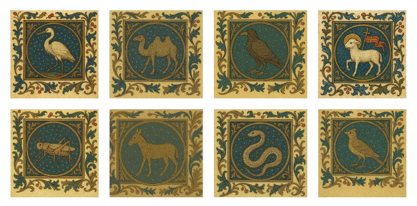

Interaktivni kviz u kojemu se pojavljuju hrvatski crkvenoslavenski nazivi životinja napisani glagoljicom. Igrači biraju jedan točan odgovor između četiriju ponuđenih opcija i testiraju svoje znanje glagoljice i hrvatskoga crkvenoslavenskoga.

Ovaj je kviz izrađen u sklopu projekta DigiSTIN i HAL.
Hvala na sudjelovanju u
kvizu!
Postotak točnih odgovora:
S obzirom na broj točnih odgovora i vrijeme ostvaren je sljedeći broj bodova:
Zapratite nas na Facebooku kako biste otkrili nove glagoljaške sadržaje.